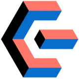
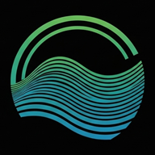
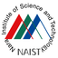

所属・活動経験
経歴
-
株式会社Unseed
2026年11月 – 現在Engineer (業務委託)
-

株式会社EpicAI
2026年11月 – 現在AIEngineer (業務委託)
-
楽天モバイル株式会社
2026年9月 (1カ月)Applied AI Research Engineer インターン
-

株式会社FastNeura
2025年6月 – 現在AIEngineer & Researcher (業務委託)
学歴
-
兵庫県立大学大学院 情報科学研究科 生体情報解析研究室
2026年4月 – 2028年3月 (修了見込み)脳波解析研究
-
兵庫県立大学 工学部 電気電子情報工学科
2022年4月 – 2026年3月量子コンピュータ研究
活動・プログラム
-
株式会社NTTドコモ
2026年9月 (5日間)ハッカソンインターン (ベストテクノロジー賞受賞)
-
NTT東日本株式会社
2026年8月 (10日間)AIエンジニア インターン
-
エムスリー株式会社
2026年8月 (2日間)データサイエンティスト インターン
-
東京大学 松尾研究室 LLMコンペ2025
2025年優勝チーム開発者認定
-
東京大学 松尾・岩澤研究室 LLMATCH
2024年10月 – 2025年7月世界モデル研究員 (一期, 二期)
-
大阪大学
2024年10月量子ソフトウェア勉強会 修了生
-

奈良先端科学技術大学院大学
2024年6月 (2日間)計算行動神経科学スプリングセミナー 修了生
-
東京大学 松尾・岩澤研究室 講義プログラム
2024年4月 –受講・修了証取得 (世界モデル、大規模言語モデル、深層強化学習 ほか)
開発物の例
RAGによるドキュメント検索・QA
LLMとベクトルDBを組み合わせたRAG（Retrieval Augmented Generation）によるドキュメント検索・QAシステム。Dockerで簡単に構築可能。
GitHubで見る資格
スキル
Python
研究開発、機械学習の主要言語
機械学習
pandas, scikit-learn, matplotlibをライブラリとして扱う
深層学習
PyTorchをライブラリとして扱う。事前学習済みモデルを用いたfinetuningやハイパーパラメータチューニング
脳波解析
EEG、MEGを主なデータソースとして扱います。MATLABを用いた信号処理の経験もあります。
LLM
大規模言語モデルのファインチューニングや松尾研チーム開発。モデルの量子化やLoRAを用いた効率的なファインチューニングの実装経験があります。
AIエージェント
Microsoft Foundryを用いたAIエージェントのチーム開発経験があります。LLMやAIエージェントについても継続的に学んでいます。
Physical AI
ROS2、Dockerを用いたシミュレーション経験。実機の組み立てから、実機上でVLMを動かす研究まで行い、研究発表した経験があります。VisionやOCRの開発経験も有します（カメラ入力の前処理・物体検出・文字認識など）。
侵襲型ブレインマシンインターフェース
ECoGを用いたAIアルゴリズム開発（信号前処理、特徴抽出、分類/回帰モデルの実装および評価）。
世界モデル
エージェントが環境を内的モデルとして学習・予測する世界モデルの研究開発。自律的な意思決定システムの構築を目指します。
Vibe Coding（AI駆動開発）
Claude Code、Codex、GitHub Copilot を用いたAIエージェント駆動の開発経験。設計・実装・リファクタリングをAIと協働して進め、開発サイクルを高速化します。
実績
脈波から心電図を生成するモデルの長時間対応と生理学的制約の導入
2026年度 人工知能学会全国大会 (JSAI2026) / FastNeura
脈波から心電図を生成する深層学習モデルについて、長時間信号への対応と生理学的制約の導入を行った研究発表。
発表情報を見るVLAから「BLA」へ：ロボット制御から感覚拡張まで繋ぐ脳波基盤モデル
FastNeura 公式note
脳波基盤モデルの最新動向を整理し、知覚・計画・行動を統合する Biosignal-Language-Action (BLA) という枠組みを提案した執筆記事。
記事を読む松尾研 LLM開発コンペ2025 優勝
東京大学 松尾研究室
チーム開発によりLLMアプリケーションの設計・実装を行い、最終審査で優勝を獲得。
世界モデル
東京大学 松尾研究室
自律エージェントが環境の動態を予測し、効率的な行動計画を立てるための世界モデルの構築。シミュレーション環境での強化学習タスクを通じて、その有効性を検証しました。
大規模言語モデル
東京大学 松尾研究室
LLMの基本原理（事前学習からRLHFまで）を学び、スケーリング則や安全対策などのコア技術を習得。APIを用いた実践的なアプリケーション開発を行いました。
深層強化学習
東京大学 松尾研究室
価値ベースの手法（DQN）から方策勾配法（REINFORCE, A2C）、さらにはPPOまで、主要な深層強化学習アルゴリズムを実装し、その理論的背景を学びました。
深層生成モデル
東京大学 松尾研究室
VAE、GAN、Flow-basedモデル、拡散モデルなど、主要な深層生成モデルの理論を学び、高品質なデータ生成のための技術を実践的に習得しました。
金融市場取引と機械学習
東京大学 松尾研究室
金融データ特有の性質を理解し、時系列解析や機械学習モデルを応用した市場予測・取引戦略の構築手法について学びました。
深層学習基礎
東京大学 松尾研究室
ニューラルネットワークの数学的基礎から、CNNやRNNなどの基本的なモデル構造、最適化手法まで、深層学習の根幹をなす知識を体系的に学習しました。
Global Consumer Intelligence
東京大学 松尾研究室
消費者行動データや市場データを分析し、ビジネス課題を解決するためのデータ駆動型インテリジェンスの獲得手法を学びました。
AIエンジニアリング
東京大学 松尾研究室
機械学習システムの開発・運用（MLOps）に関する実践的知識を学習。Docker, Kubernetes, CI/CDパイプラインの構築など。
PhysicalAI
東京大学 松尾研究室
ロボティクスとAIを融合し、物理世界でタスクを遂行するエージェントを開発。シミュレーションでの制御を学習。
AIと半導体
東京大学 松尾研究室
深層ニューラルネットワークやLLMを支える半導体技術・CPU/GPUアーキテクチャ・回路設計・FPGA開発まで。
量子ソフトウェア勉強会
大阪大学
量子コンピュータのプログラミングに必要な基礎知識と、主要な量子アルゴリズム（Shorのアルゴリズム, Groverのアルゴリズム等）について学びました。
計算行動神経科学スプリングセミナー
奈良先端科学技術大学院大学
脳の計算論的モデルと、実際の神経活動データや行動データを結びつけるためのアプローチについて、講義と実践を通じて学びました。
発表資料
Paper & Hacks
世界モデル、ロボット、マルチモーダル基盤モデルについてのサーベイまとめ
ATR-BRI研究計画
NAIST/ATR院用の研究計画書
量子ダイヤモンド研究
ダイヤモンドを用いた量子コンピュータ研究
脳波解析研究計画
脳波(EEG)データを用いた感情解析の研究計画書
DLHacks
グラフニューラルネットワークとDocker環境構築に関する発表資料
DLHacks（意識理論×AI）
意識理論×AI、人工意識の論文と実装に関する資料
ThousandBrains
Thousand Brains Theory に関する資料
Brain-Inspired-Intelligence
脳に着想を得た知能アーキテクチャとAGIへの道筋に関する資料